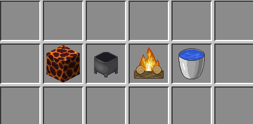
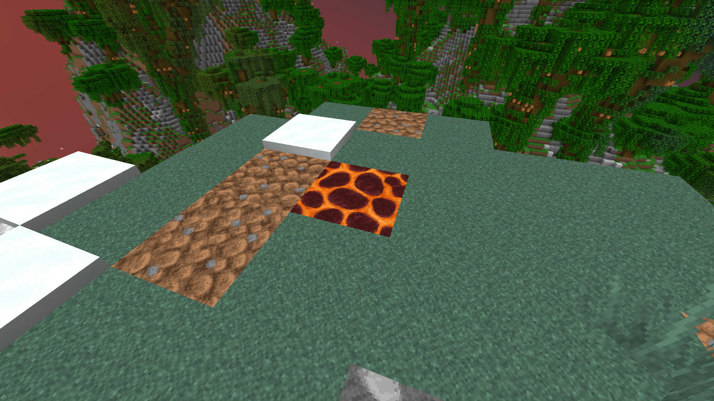
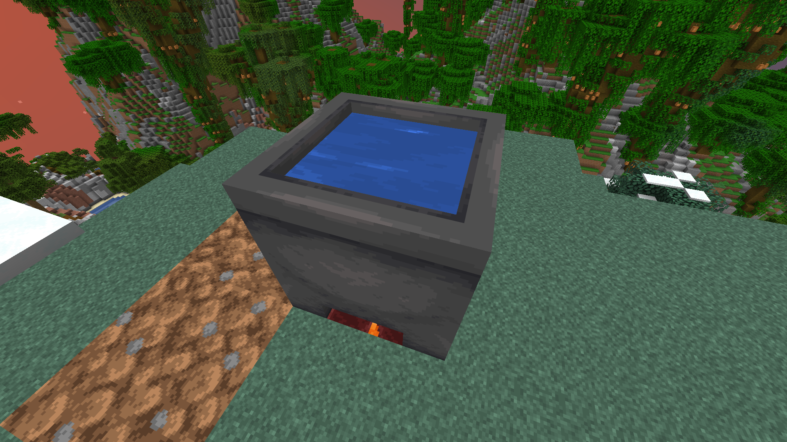
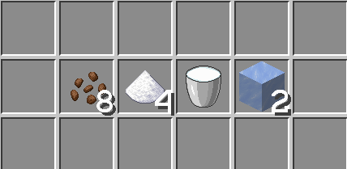
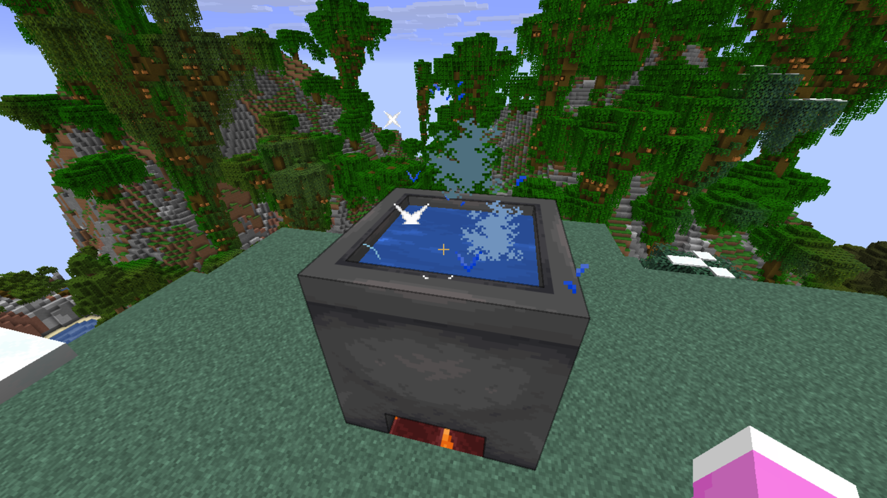
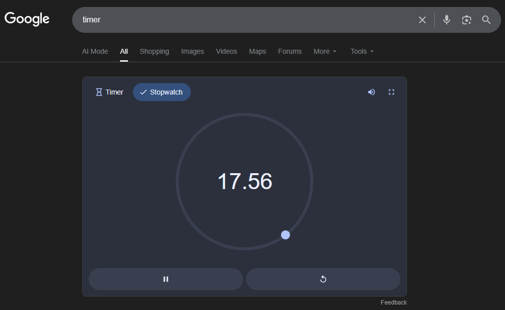
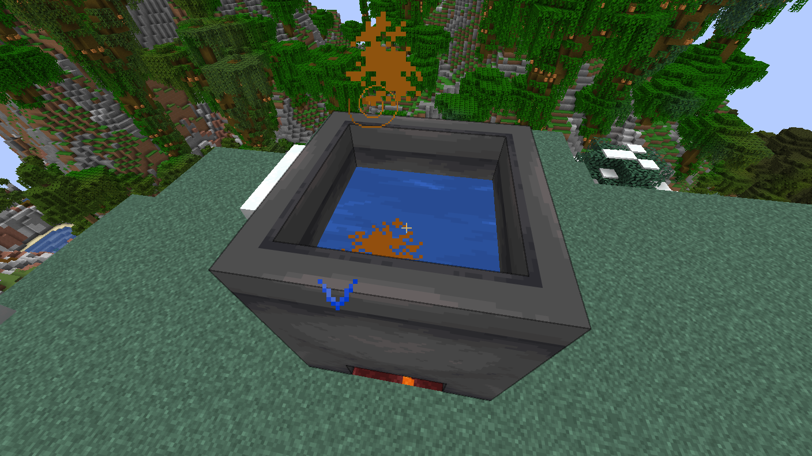
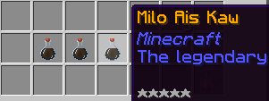

nasi.lemak.xyz
Mamak Drinks Guide
Learn how to brew authentic Malaysian beverages here.
nasi.lemak.xyz
Learn how to brew authentic Malaysian beverages here.
Mamak Drinks are custom, authentic Malaysian beverages you can craft in-game to gain unique effects and buffs. To get started, you must first acquire the recipe from Ahmad, our local vendor located at the Server Spawn. Once you have the recipe in hand, you are ready to start brewing!
If you haven't bought the recipe from Ahmad at Spawn, you will not be able to brew the drink, even if you know the ingredients! Make sure you officially unlock it first.
Prepare your brewing station. You will need a Cauldron, a heat source (either a Campfire or a Magma Block), a Water Bucket, and 3 Glass Bottles.

Place your chosen heat source (Campfire or Magma Block) down on the ground where you want to set up your brewing station.

Place the Cauldron directly above the Campfire or Magma Block, then use your Water Bucket to fill the Cauldron with water.

Get your required ingredients ready in your inventory. For this tutorial, we will be using the ingredients for the classic Milo Ais recipe.

Right-click the Cauldron while holding your ingredients to toss them in. Accuracy is key! Do not put more or less than the recipe states, it must be exactly right (ngam ngam!).

Begin calculating the cooking time immediately from the moment you put the first ingredient into the Cauldron.

When the exact cooking time is up, quickly right-click the Cauldron with your empty Glass Bottles to collect the finished beverage.

Tadaaa! You have successfully brewed an authentic Mamak drink. Drink it to enjoy its unique buffs, or share it with your friends!
